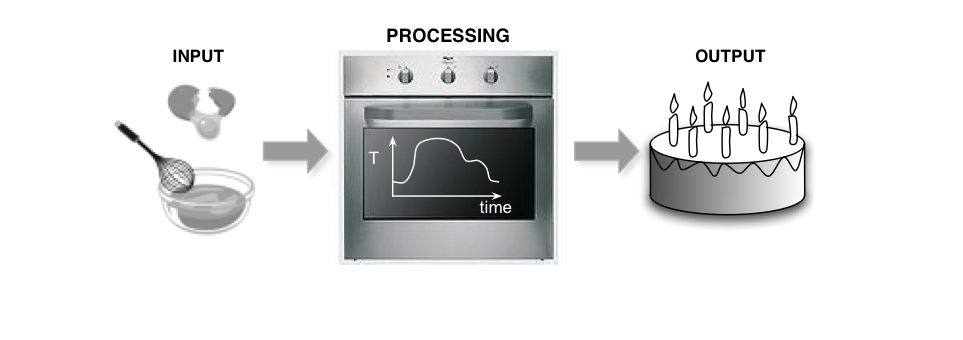
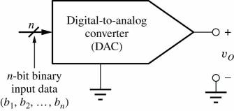
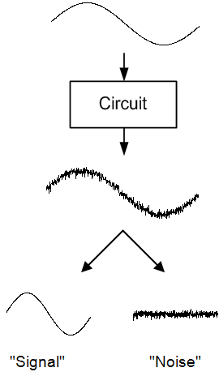

2 Signale
2.1 Einfache Signale
- Signale repräsentieren Informationen
- Ein Beispiel: Temperatur eines Backofens
- Mögliche Signale:
- Temperatur des Backofens
- Temperatur und Feuchtigkeit des Kuchenteigs
- Geschmack/Qualität des Kuchens

2.2 Signaltypen
2.3 Konstantes Signal
Ein konstantes Signal für ein elektronisches System korrespondiert nicht mit der mathematischen Definition einer Konstanten.
Versorgungsspannungen und Referenzsignale elektronischer Schaltungen sind immer fehlerbehaftet (statisch und/oder statistisch).
Toleranzen/Fehlergrenzen
2.4 Nominal und Worst Case
Wir definieren nominal als das Ausgangssignal, welches wir bei einem spezifizierten Eingangssignal erwarten; E/A-Verhalten.
Worst case high und worst case low definieren Signale, die über und unter dem nominalen Signal liegen.
2.5 Zeitkontinuierliches Signal
2.6 Sprungsignale
Sprung und Impuls sind plötzliche Amplitudenänderungen.
2.7 Sprungfunktionen
Sprungfunktion
Rechteckfunktion
Signumfunktion
Dreieckfunktion
2.8 Zeitdiskrete Signale
2.9 Analog and Digital Signals
After digitization, the continuous analog signal becomes a set of discrete valueAnalog electrical signals are continuous in time - most often voltage or current. (Charge can also be utilized as a signal conveyor.)
s, typically separated by fixed time intervals.

2.10 The Data Conversion Problem
- Real world signals
- Continuous time, continuous amplitude
- Digital abstraction
- Discrete time, discrete amplitude
- Two problems
- How to discretize in time and amplitude
- A/D conversion (ADC)
- How to “un-discretize” in time and amplitude
- D/A conversion (DAC)
- How to discretize in time and amplitude
2.11 Overview
- We’ll first look at these building blocks from a functional, “black box” perspective.
- Refine later and look at implementations
2.12 Analog-to-Digital (A/D) Conversion
Analog input voltage vx is converted to an n-bit number.
For a four-bit converter, vx ranging between 0 and VFS yields a digital output code between 0000 and 1111.
The output is an approximation of the input due to the limited resolution of the n-bit output. Error is expressed as:

2.13 Digital-to-Analog (D/A) Conversion
For an n-bit D/A converter, the output voltage is expressed as:
The smallest possible voltage change is known as the least significant bit or LSB.

2.14 Uniform Sampling and Quantization
- Most common way of performing A/D conversion
- Sample signal uniformly in time
- Quantize signal uniformly in amplitude
- Key questions
- How much “noise” is added due to amplitude quantization?
- How can we reconstruct the signal back into analog form?
- How fast do we need to sample?
- Must avoid “aliasing”
- https://en.wikipedia.org/wiki/Aliasing
2.15 Aliasing (1)
2.16 Aliasing (2)
Source: EE315a, B. Murmann, Stanford Univ.
2.17 Aliasing (3)
Source: EE315a, B. Murmann, Stanford Univ.
2.18 Consequence
The frequencies fsig and N·fs ± fsig (N integer), are indistinguishable in the discrete time domain.
2.19 Sampling Theorem
- In order to prevent aliasing, we need
- The sampling rate fs=2·fsig,max is called the Nyquist rate
- Two possibilities
- Sample fast enough to cover all spectral components, including “parasitic” ones outside band of interest
- Limit fsig,max through filtering
2.20 Ideal (Brick Wall) Anti-Alias Filter (AAF)
2.21 Practical Anti-Alias Filter (AAF)
Need to sample faster than Nyquist rate to get good attenuation=> Oversampling
2.22 How much Oversampling?
Can tradeoff sampling speed against filter order.
In high speed converters, making fs/fsig,max>10 is usually impossible or too costly.
Means that we need fairly high order filters.
Ref. “CMOS Integrated ADC and DAC”, v.d. Plassche, 2003
2.23 Classes of Sampling
2.24 The Reconstruction Problem
2.25 Zero-Order Hold Reconstruction
- The most practical way of reconstructing the continuous time signal is to simply hold the discrete time values
- Either for full period Ts or a fraction thereof
- Other schemes exist, e.g. partial-order hold
- What does this do to the signal spectrum?
- We’ll analyze this in two steps
- First look at infinitely narrow reconstruction pulses
2.26 Dirac Pulses
2.27 Spectrum
Spectrum of Dirac signal contains replicas of Vin(f) at integer multiples of the sampling frequency.
2.28 Finite Hold Pulse
Amplitude Envelope
2.29 Example
Spectrum of Continuous Time Pulse Train (Arbitrary Example)
ZOH Transfer Function **(“** Sinc __ Distortion”)__
ZOH Output, Spectrum of Staircase Approximation
original spectrum
2.30 Reconstruction Filter
- Also called smoothing filter
- Same situation as withanti-alias filter
- A brick wall filter would be nice
- Oversampling helps reduce filter order
2.31 Summary
2.32 Recap
- Next, look at
- Transfer functions of quantizer and DAC
- Impact of quantization error


Transfer Function
V q (quantized output)
2.33 Quantization of an Analog Signal
- Quantization step D
- Quantization error has sawtooth shape
- Bounded by
- Ideally
- Infinite input range and infinite number of quantization levels
- In practice
- Finite input range and finite number of quantization levels
- Output is a digital word (not an analog voltage)
2.34 Conceptual Model of a Quantizer
- Encoding block determines how quantized levels are mapped into digital codes
- Note that this model is not meant to represent an actual hardware implementation
- Its purpose is to show that quantization and encoding are conceptually separate operations
- Changing the encoding of a quantizer has no interesting implications on its function or performance
2.35 Encoding Example for a B-Bit Quantizer
- Example: B=3
- 23=8 distinct output codes
- Diagram on the left shows “straight-binary encoding”
- See e.g. Analog Devices “MT-009: Data Converter Codes” for other encoding schemes
- Quantization error grows out of bounds beyond code boundaries
- We define the full scale range (FSR) as the maximum input range that satisfiesImplies that
2.36 Nomenclature

- Overloading - Occurs when an input outside the FSR is applied
- Transition level – Input value at the transition between two codes. By standard convention, the transition level T(k) lies between codes k-1 and k
- Code width – The difference between adjacent transition levels. By standard convention, the code width W(k)=T(k+1)-T(k)
- Note that the code width of the first and last code (000 and 111 on previous slide) is undefined
- LSB size (or width) – synonymous with code width D
[IEEE Standard 1241-2000]
2.37 Bipolar Mid-Rise Quantizer
2.38 Bipolar Mid-Tread Quantizer
2.39 Unipolar Quantizer
- Usually define origin where first code and straight line fit intersect
- Otherwise, there would be a systematic offset
- Usable range is reduced by D/2 below zero
2.40 Effect of Quantization Error on Signal
- Two aspects
- How much noise power does quantization add to samples?
- How is this noise power distributed in frequency?
- Quantization error is a deterministic function of the signal
- Should be able to answer above questions using a deterministic analysis.
- But, unfortunately, such an analysis strongly depends on the chosen signal and can be very complex.
- Strategy
- Build basic intuition using simple deterministic signals.
- Next, abandon idea of deterministic representation and revert to a “general” statistical model (to be used with caution).
2.41 Ramp Input
Applying a ramp signal (periodic sawtooth) at the input of the quantizer gives the following time domain waveform for eq
What is the average power of this waveform?
Integrate over one period
2.42 Sine Wave Input
Integration is not straightforward…
2.43 Quantization Error Histogram
Sinusoidal input signal with fsig=101 Hz, sampled at fs=1000 Hz
8-bit quantizer
Distribution is “almost” uniform
Can approximate average power by integrating uniform distribution
2.44 Statistical Model of Quantization Error
- Assumption: eq(x) has a uniform probability density
- This approximation holds reasonably well in practice when
- Signal spans large number of quantization steps
- Signal is “sufficiently active”
- Quantizer does not overload
2.45 Dynamic Range Definition ideal ADC
2.46 Dynamic Rang ideal ADC
| B (Number of Bits) | SQNR |
|---|---|
| 8 | 50 dB |
| 12 | 74 dB |
| 16 | 98 dB |
| 20 | 122 dB |
2.47 Ideal DAC
- Essentially a digitally controlled voltage, current or charge source
- Example below is for unipolar DAC
- Ideal DAC does not introduce quantization error!
2.48 Static Nonidealities
- Static deviations of transfer characteristics from ideality
- Offset
- Gain error
- Differential Nonlinearity (DNL)
- Integral Nonlinearity (INL)
- Useful references
- “The Importance of Data Converter Static Specifications”, Analog Devices MT-010
- “Understanding Data Converters”, Texas Instruments Application Report SLAA013, 1995
2.49 Offset and Gain Error
- Conceptually simple, but lots of (uninteresting) subtleties in how exactly these errors should be defined
- Unipolar vs. bipolar, endpoint vs. midpoint specification
- Definition in presence of nonlinearities
- General idea (neglecting staircase nature of transfer functions):
2.50 ADC Offset and Gain Error
- Definitions based on bottom and top endpoints of transfer characteristic
- ½ LSB before first transition and ½ LSB after last transition
- Offset is the deviation of bottom endpoint from its ideal location
- Gain error is the deviation of top endpoint from its ideal location with offset removed
- Both quantities are measured in LSB or as percentage of full-scale range
Same idea, except that endpoints are directly defined by analog output values at minimum and maximum digital input
Also note that errors are specified along the vertical axis
2.52 Rauschen / Noise
Rauschen ist ein spezieller Signaltyp (statistischer Prozess) und beinhaltet keine Information, stört aber die Information.



2.53 LTI Systeme mit stochastischer Erregung (1)
Wahrscheinlichkeitsdichtefunktion
Erwartungswert (Mittelwert, Varianz)
Autokorrelationsfunktion
Ref. Systemtheorie, Fliege, 1991
Parseval’s Theorem
Wiener-Chintchin Theorem (Autokorrelation)
Mittlerer Erwartungswert
Wiener-Lee Relation (Autokorrelation)
2.54 Totales integriertes Rauschen
Vom Leistungsdichtespektrum (PSD) zum integrierten Rauschen
Signal-zu-Rausch-Verhältnis (SNR)
2.51 Comments on Offset and Gain Errors